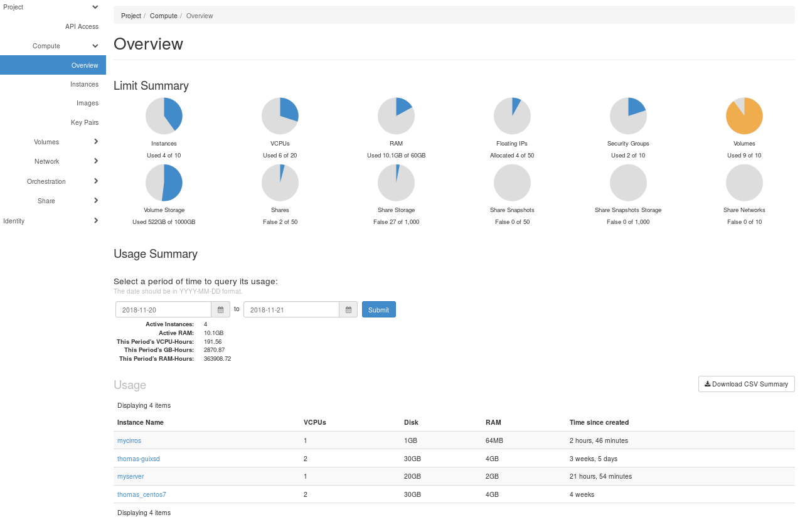

The OpenStack Dashboard#
After login, you can see the Overview tab of Horizon, the OpenStack Dashboard.

This chapter briefly describes the different components of the dashboard. You can read the official documentation at https://docs.openstack.org/horizon/latest/user/.
The VSC cloud uses a customized dashboard. Some features mentioned in the official OpenStack documentation were intentionally removed, please contact if you need access to one of these disabled features.
Project tab#
Resources (instances, data volumes, networks, ...) in OpenStack are organized into different projects, and every user is a member of one or more projects. Every project member has full access to all of the project's resources.
From the Project tab, you can access the following categories:
API Access View API endpoints.
Compute
- Overview: View reports for the project.
-
Instances: View, launch, create a snapshot from, stop, pause, or reboot instances, or connect to them through VNC.
-
Images: View images and instance snapshots created by project users, plus any images that are publicly available. Create, edit, and delete images, and launch instances from images and snapshots.
-
Key Pairs: View, create, edit, import, and delete key pairs.
-
Server Groups: Server groups provide a mechanism to group servers according to certain policy.
Volumes
-
Volumes: View, create, edit, and delete volumes.
-
Snapshots: View, create, edit, and delete volume snapshots.
Network
-
Networks: Create and manage public and private networks.
-
Security Groups: View, create, edit, and delete security groups and security group rules..
-
Floating IPs: Allocate an IP address to or release it from a project
Orchestration
-
Stacks: Use the REST API to orchestrate multiple composite cloud applications.
-
Resource types: Show a list of all the supported resource types for HOT templates.
-
Template versions: The version of a Heat template specifies the format of the template and also the corresponding features that will be validated and supported.
-
Template generator: A graphical interface to build and edit templates.
Shares
- Shares: Create and manage share.
Identity tab#
From the Identity tab, you can access the following categories:
Projects
View, create, assign users to, remove users from, and delete projects.
Users
View, create, enable, disable, and delete users.
Application Credentials
With application credentials, a user can grant applications limited access to their cloud resources.